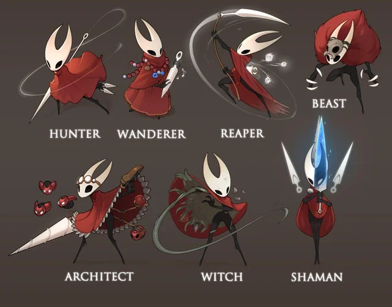

Биография
Хорнет – дочь Херры Зверя и Бледного Короля. Её мать согласилась стать Грезящей при условии того, что Бледный Король дарует ей дитя.
Дитя трёх королев – рождённая королевой Херрой Зверем, воспитанная Белой Леди и обученная Королевой Веспой, она защищала Халлоунест ценой своей жизни.
Но теперь перед принцессой-защитницей Халлоунеста встаёт новое приключение. Захваченной в плен и доставленной в Земли Фарлума, ей придётся добраться до самой вершины Священной Цитадели, чтобы решить свою судьбу.
Таланты ткачей
Шёлковое копьё
- Бросок иглы вперёд, прошивающий врагов насквозь
- Окутывание нитями, пронзающими врагов вокруг
- Парирование ударов врагов и смертоносная контратака
- Рывок вперёд, несущий сквозь любых врагов
- Призыв рун, разрывающих врагов, где бы они не были
- Когти, которые ищут врагов и устремляются к ним


Знаки шёлка

| Вид | Название | Ячейки | Способность | |||
|---|---|---|---|---|---|---|
 |
Охотница | 1 | 2 | 2 | 2 | Увеличение урона последовательных атак |
|  | Жнец | 1 | 2 | 2 | 2 | Высекание дополнительного шёлка |
|  | Странница | 1 | 1 | 2 | 3 | Шквал быстрых ударов |
 |
Зверь | 1 | 2 | 0 | 2 | Ярость, похищающая здоровье врагов |
|  | Архитектор | 0 | 3 | 2 | 2 | Создание новых инструментов налету |
 |
Ведьма | 1 | 2 | 3 | 0 | Шюпальца паразита опутывают ваших врагов |
 |
Шаманка | 3 | 0 | 2 | 0 | Шюпальца паразита опутывают ваших врагов |